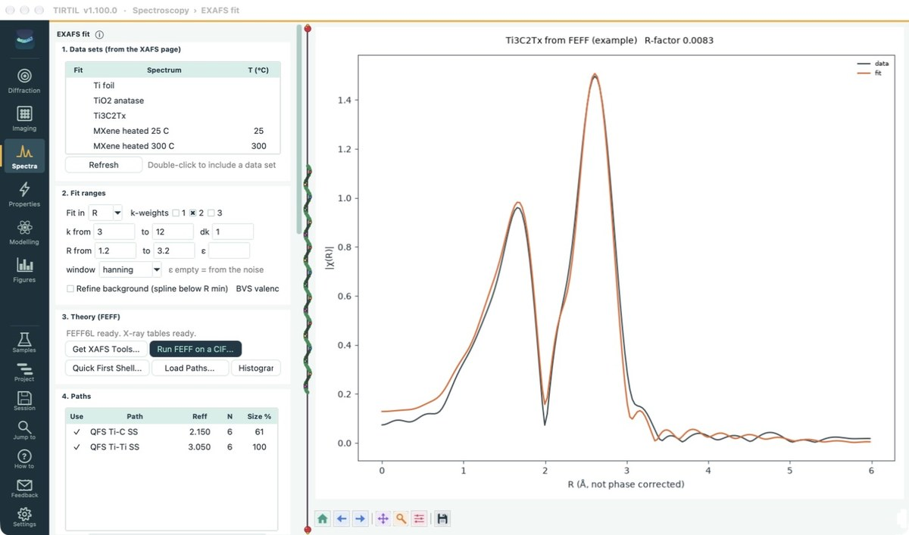
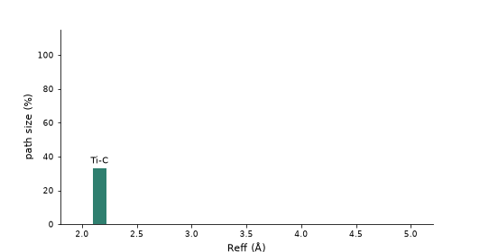

Spectra
EXAFS fit
Bond lengths, coordination and disorder from FEFF path fits.

Steps
Run FEFF on a CIF...Make the paths: Get XAFS Tools... once, then Run FEFF on a CIF (or Quick First Shell without a structure, or Load Paths). The biggest near paths are ticked.- GDS: guess parameters are fitted, def are formulas of others, set are fixed, lguess gives each data set its own value, restrain adds prior knowledge, after reports a result.
- Include data sets (double-click), pick the fit space, ranges and k-weights, and
Fit. The log has the values with errors, statistics and correlations. - For a heating series: fit all temperatures together with shared parameters and σ² = eins(temp, θ), or fit them one by one with
Sequential Fit.
How it works

Worked example
TiC: one Ti-C shell at 2.164 Å (N = 6) and Ti-Ti at 3.060 Å (N = 12). With amp, enot, delr and ss for each shell that is 6 guesses; k 3-12 and R 1.2-3.2 give 11.5 independent points, so the fit is determined. R-factor under 0.02 is good.
In TIRTIL: How to (⌘/) › Try It With Example Data loads this example.